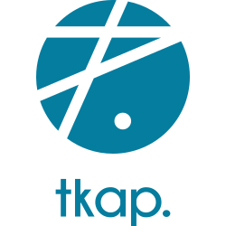

tKAP¶



tKAP is a set of Terraform/Terragrunt modules designed to get you everything you need to run a production Kapsule cluster on Scaleway Element. It ships with sensible defaults, and add a lot of common addons with their configurations that work out of the box.
Requirements¶
- Terraform
- Terragrunt
- scalway-cli configured for your scaleway account
- A Terraform Cloud to store Terraform state and have state locking
- (Optional) A scaleway DNS zone if you want to have dynamic DNS
Pre-commit¶
This repository use pre-commit hooks, please see this on how to setup tooling
ASDF¶
ASDF is a package manager which is great for managing cloud native tooling. More info here(eg. French).
Main purposes¶
The main goal of this project is to glue together commonly used tooling with Kubernetes/Kapsule and to get from a scaleway account to a production cluster with everything you need without any manual configuration.
What you get¶
A production cluster all defined in IaaC with Terraform:
- Kapsule cluster base on
terraform-scaleway-kapsule - Kubernetes addons based on
terraform-kubernetes-addons: provides various addons that are often used on Kubernetes and specifically on EKS.
Everything is tied together with Terraform and allows you to deploy a multi cluster architecture in a matter of minutes (ok maybe an hour) and different Scaleway accounts and/or regions for different environments.